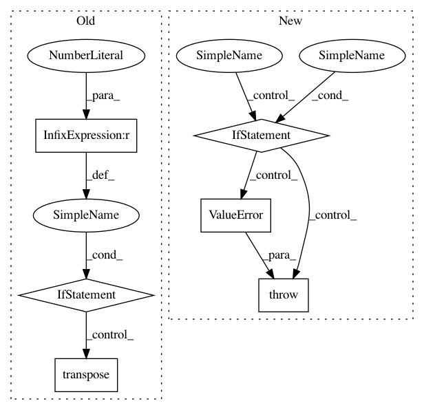

9148325b9ca9edf94aaebd453b3cf86dba2ef99a,keras/backend/theano_backend.py,,batch_dot,#Any#Any#Any#,426
Before Change
// workaround because theano doesn"t accept axes
// which contains the batch axis (0)
if axes[0] == 0:
x = transpose(x)
axes[0] = x.ndim - 1
if axes[1] == 0:
y = transpose(y)
axes[1] = y.ndim - 1
After Change
if isinstance(axes, tuple):
axes = list(axes)
if 0 in axes:
raise ValueError("Can not perform batch_dot over axis 0."
"If your inputs are not batched,"
" add a dummy batch dimension to your "
"inputs using K.expand_dims(x, 0)")
out = T.batched_tensordot(x, y, axes=axes)
if ndim(out) == 1:
out = expand_dims(out, 1)
In pattern: SUPERPATTERN
Frequency: 3
Non-data size: 6
Instances
Project Name: keras-team/keras
Commit Name: 9148325b9ca9edf94aaebd453b3cf86dba2ef99a
Time: 2018-10-25
Author: farizrahman4u@gmail.com
File Name: keras/backend/theano_backend.py
Class Name:
Method Name: batch_dot
Project Name: tensorflow/lattice
Commit Name: 1c75176947730de8322acf6ad996096625e92e3a
Time: 2020-06-15
Author: no-reply@google.com
File Name: tensorflow_lattice/python/lattice_layer.py
Class Name: Lattice
Method Name: call
Project Name: chainer/chainercv
Commit Name: b776ae08e9e676435c5cf8d1f31a86dfd3e1897f
Time: 2018-10-20
Author: yuyuniitani@gmail.com
File Name: chainercv/utils/image/read_image.py
Class Name:
Method Name: read_image